Hey you... Welcome to a website about ME!
This is Defne Tim btw.
Now that I think about it, it is pretty narcissistic to create a website to just introduce myself.
Basics
- Born: Istanbul, Turkey
- Raised: Izmir, Turkey
- Age: "You're 20! It's ok babygirl no one has to know"
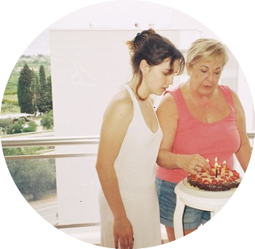
- Living in: Philadelphia, PA
- School: University of Pennsylvania
- Year: 2026
- Majors: Computation and Cognition + Mathematical Economics
- Minor: Computer Science
- Languages: Turkish, English
- Campus things: Spark, Mask and Wig, GRC


- Pet: 10-year-old King Charles Cavalier

- Favorite city: Prague, Czech Republic

- Want to go to: Lisbon, Portugal
Fun Facts
- I have 47 year-old brothers (yes, twins).
- I once climbed Mount Royal at 4am.
- I can swim in water as cold as 10 degrees celcius.
 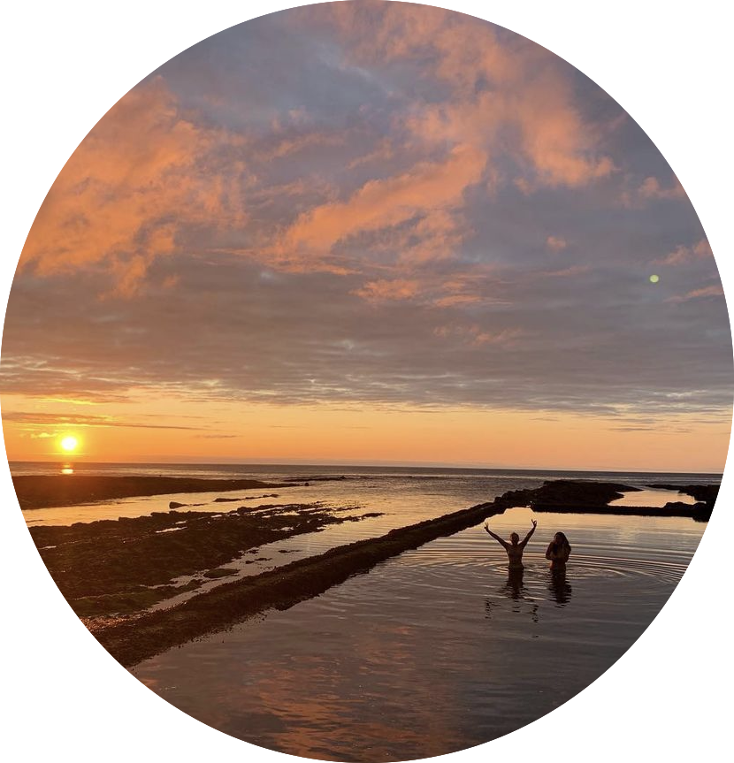
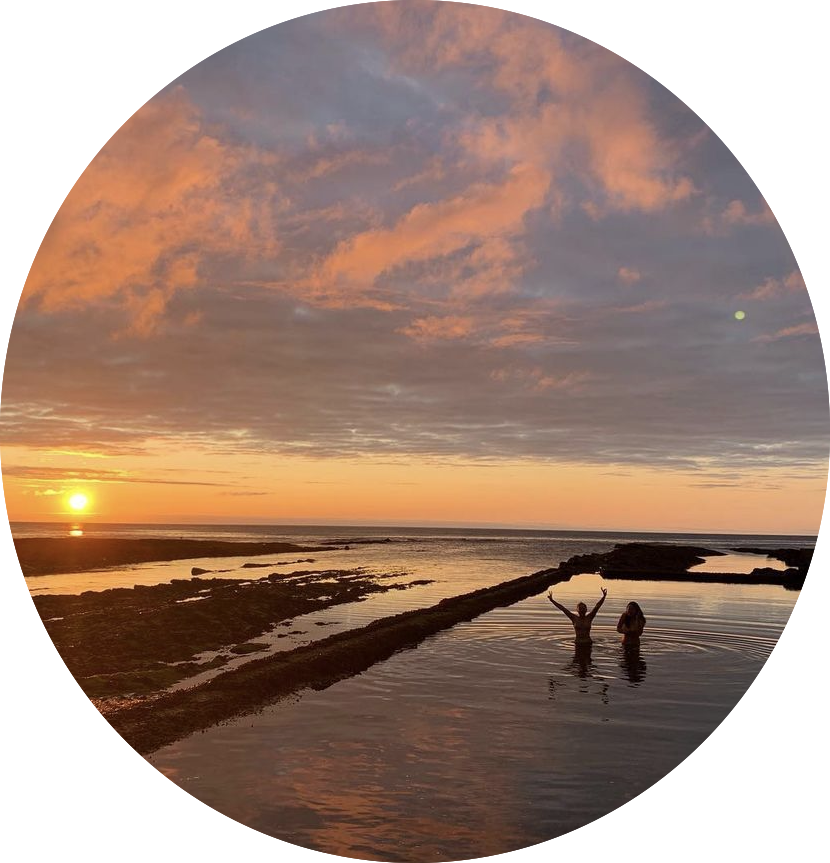
- My high school nickname was curvy curly.
- I still sleep with my first ever teddy bear.
- I have terrible memory. Concerning level...
- My childhood dream job was to become a belly dancer.
- I once slept outside for 5 days (Turkey EARTHQUAKES!)
- My celebrity crush is David Tennnant.
Dance
- I started doing ballet at 4.
- I am a ministry of education certified ballet instrucor in Turkey
- I, in fact, can belly dance.
- I am the last person to leave a rave.
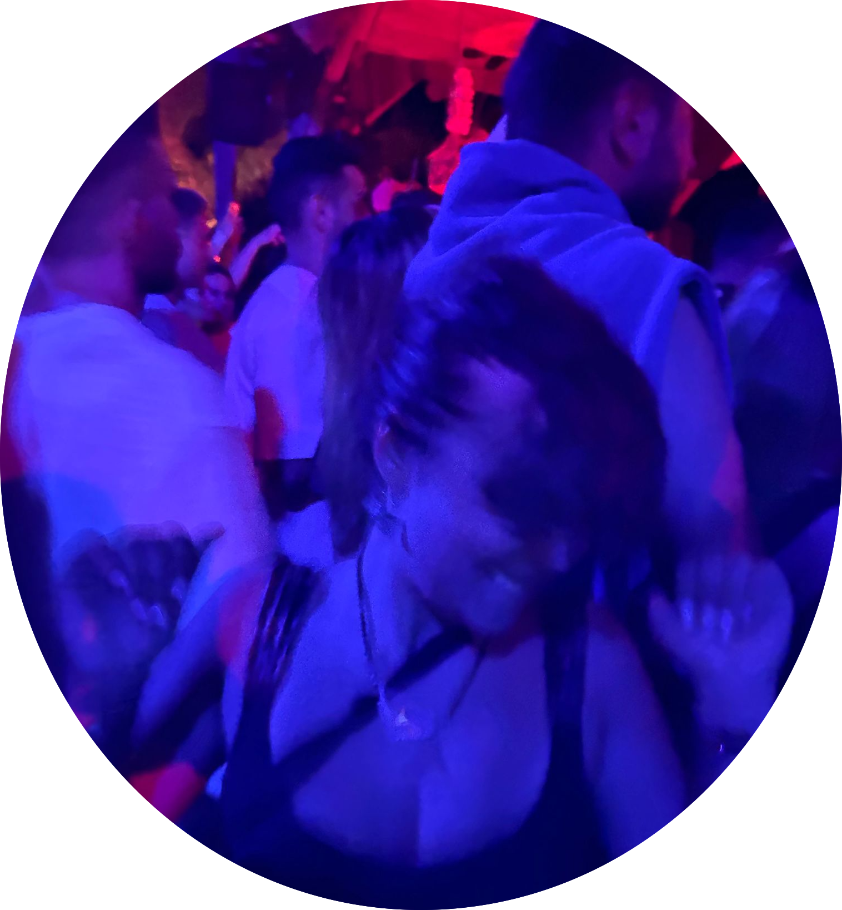
- I choreograph the numbers for Mask and Wig.
- Best genre to groove: reggae
- I tap!
Music
- Favorite genre: Anatolian Funk
- Listen to Altin Gun. Trust me.
- Spotify: defnetim
- Song to take a long hot shower to: Planet Caravan by Black Sabbath
- Only English song that makes me cry: Madison by Orla Gartland
- Song to listen to when making breakfast: Ti Imouna Gia Sena by Antonis Remos
- Guilty Pleasure: Turkish Rap
- I am obsessed with folklore.
Food
- Comfort food: Turkish cusine, duh.


- Eat out pick: Dim Sum
- Go-to coffee order: Large shaken espresso with almond milk
- Favorite ingredient: garlic
- Favorite snack: yogurt
- Go-to food truck: Magic Carpet
- Favorite fruit: pomegranate, I have a tattoo of it.
- When I don't have food, I cook eggs. I once ate eggs for 4 consecutive meals.

Theatre
- I was Hellen Keler in high school: Click!
- I was also The Bride in Blood Wedding!
- I played a stone in the THAR program's Eurydice!
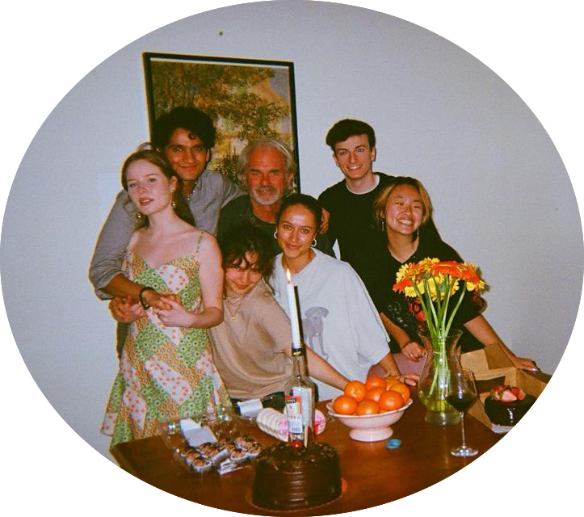
- Favorite American play: A Streetcar Named Desire by Tennessee Williams
- Favorite Turkish Play: Asiye Nasıl Kurtulur by Vasıf Öngören
A sneak peak into my life...

 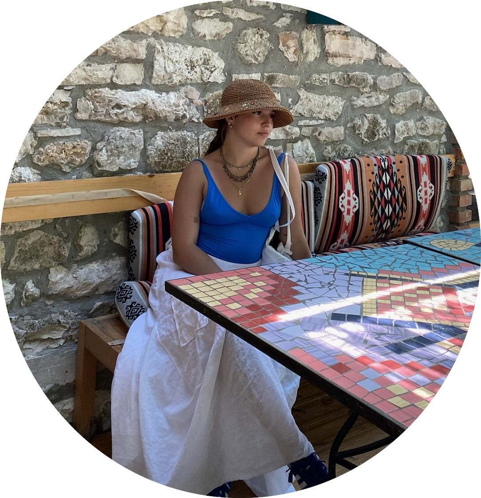
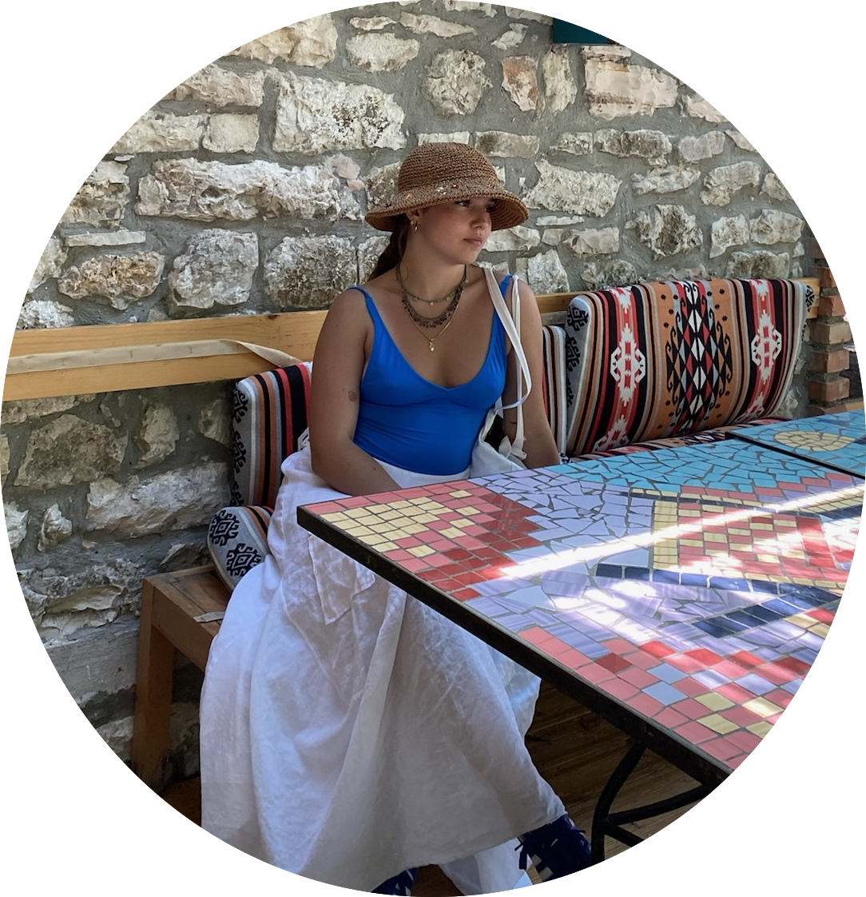

 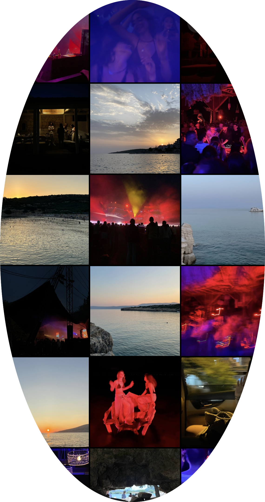
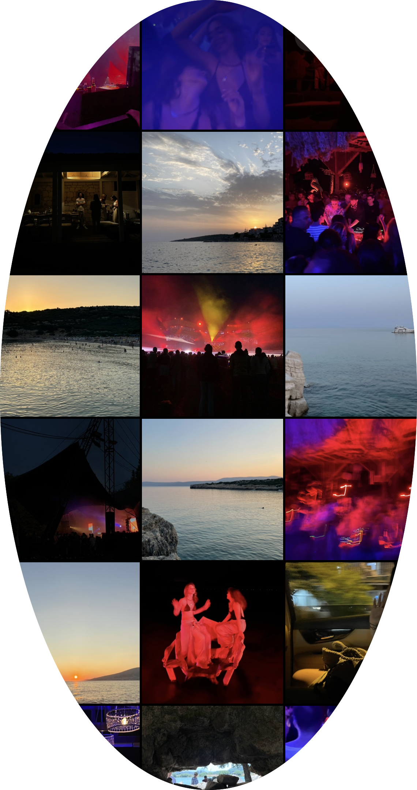

 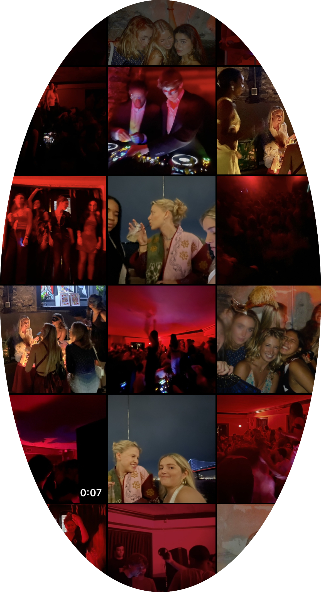
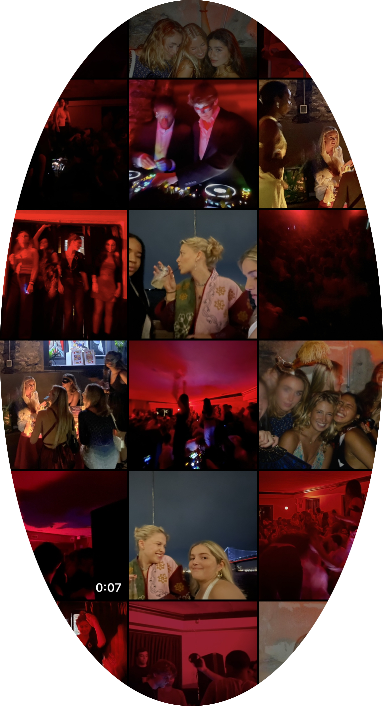